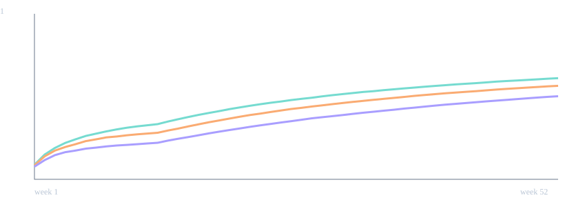

Avalanche Fuji C-Chain · 43113
From guest to a real game transaction.
Testnet — no real value. A browser guest wallet signs in with SIWE; the game reads ownership and trades directly from contracts. Offline play remains available.
Existing Relic contracts preservedNo combat advantageNo mainnetThe two-minute judge route
- EnterChoose Play as guest. Wait for 0.05 test AVAX, or use the official faucet.
- CollectOpen Market → Judge pass. Claim test YARN, fight the starter boss and mint a Relic.
- TradeList from Bag at your own price. Buy a cheap bot listing from Market. V2 fees appear before confirmation.
- VerifyOpen the receipt’s Snowtrace link. Check ownership in Bag; cancel unsold listings or claim sale proceeds under Mine.
The complete browser loop is tested on disposable Anvil with Fuji’s chain ID. The user-run public smoke passed 18 confirmed transactions on 12 November 2026. The two-minute public target is not yet measured.
Where trust lives
Wallet → SIWEThe browser keeps the guest key and signs in to Supabase.
Server → voucherBoss proof and verified seal payments authorize an expiring mint voucher.
Wallet → FujiRelicNFT mints; YARN burns seal fees; SeasonRewards pays claims; Market V2 escrows trades.
Chain → gameContract reads update the Bag, listings, balances and transaction receipts.
Offline saves cannot authorize a seal. Reserved inventory is consumed only after a verified YARN burn; retries reuse the mint nonce. V1 remains fee-free. Relics and sealed items use the existing collection.
Contract registry
| Contract | Fuji address / status | Purpose |
|---|---|---|
| RelicNFT | 0xB1a1edb7A75Db6e7067E747ddee32B39c2296f2D | Existing voucher mint |
| RelicMarket | 0x10fcC46e439d3E31Fb1720B337C45CadB9b2ff93 | Existing AVAX market |
| YarnToken | 0x3ae1b898c1Ded263b30D968D26Fe65211f102d6b | 1 billion genesis supply, burn, permit |
| RelicMarket V2 | 0x6Fe415494D791E63d87613B8FBCdbb24743C7eb4 | 5% sale fee; no floor or ceiling |
| SeasonRewards | 0x29d4F1b9d4577BF2bA5c6bdB849CA5fdc9bd6c11 | Signed claims; 32 YARN weekly cap |
Public addresses verified through read-only Fuji RPC; deployed runtime matches local build artifacts. Frontend metadata hosting and V2 bot listings still need the user’s deployment workflow. Contract interfaces and security model.
A 52-week emission budget
Three player mixes; the farmer-heavy mix includes 20% bot wallets. Source supply is measured from drop rules under successful-play assumptions, not observed player behavior. The chart shows cumulative YARN burns / claims including the tester grant.

Economic acceptance remains NOT MET: default claims/burn 2.07–2.41, above2. Low-adoption and inventory-saturation cases remain weak even with smaller rewards. Routine payouts stay disabled; finite forge and styles are implemented locally behind separate flags, with public activation deferred. No price forecast.
Weekly model · 720-run stock and demand study · Phí seal: 216 so sánh + 36 stress · Complete-basket price study · One-season pilot · Feature budgets · Tiếng Việt · Research